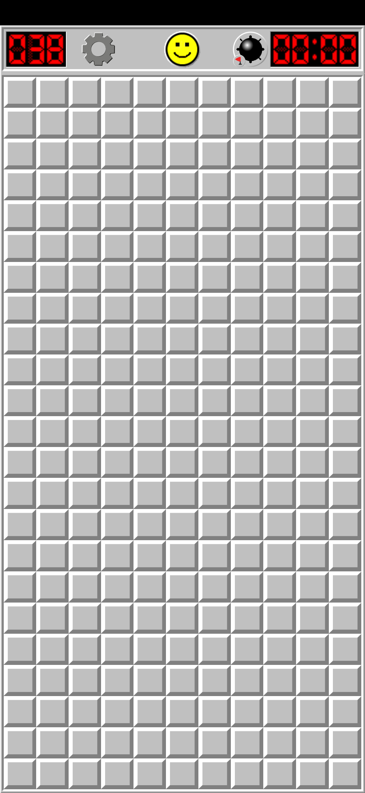

Game Replays
Watch the Games Unfold
Step through each game as the model played it. Use the controls to navigate, or hit play for an auto-advancing slideshow.
Game 1
💥 Lost
▶ AUTO
0 / 18
Game 2
💥 Lost
▶ AUTO
0 / 16
Game 3
💥 Lost
▶ AUTO
0 / 12